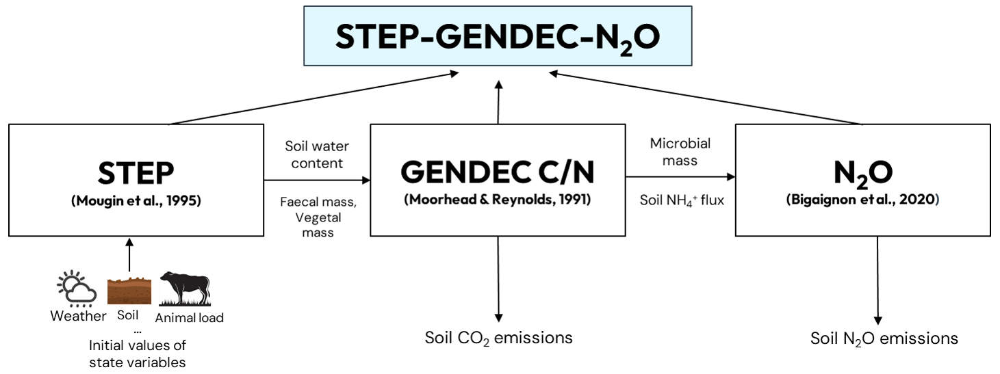
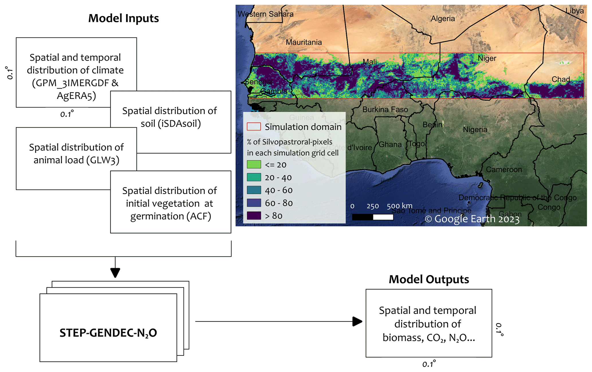
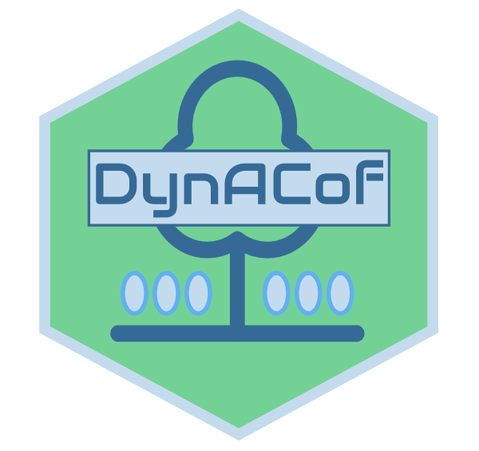
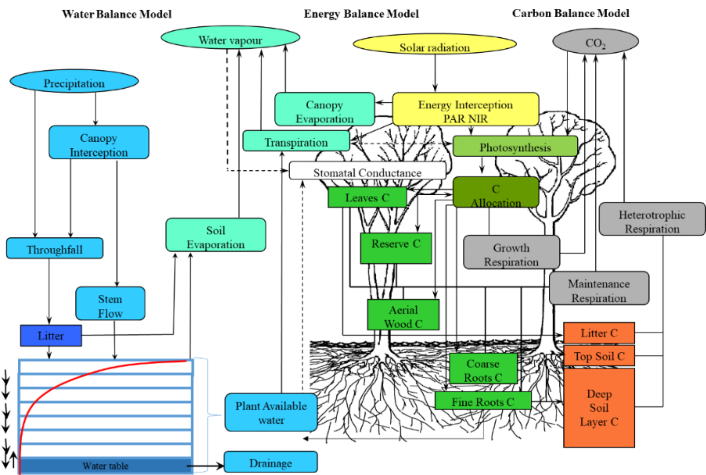
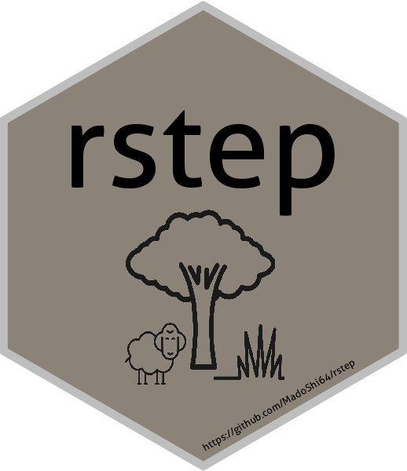
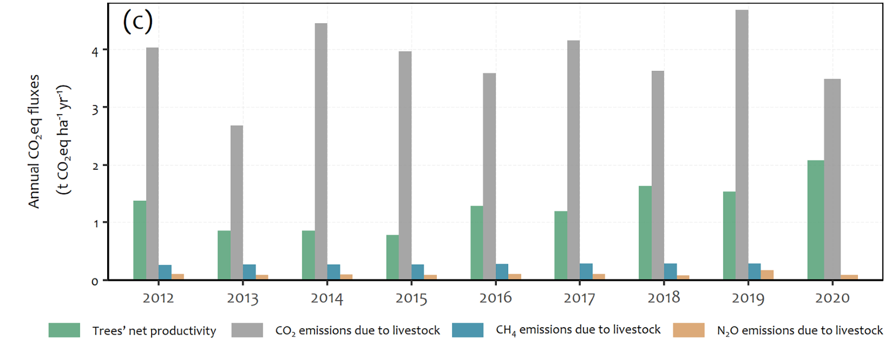

Models I use, and my custom codes and package
Models I use 🔄
1D-STEP-GENDEC-CN simulates in Sahelian herbaceous savannas the water, C and N cycling between the atmosphere, vegetation, and soil

2D-STEP-GENDEC-CN is the spatialized version of 1D-STEP-GENDEC-CN

DynACof: The Dynamic Agroforestry Coffee Crop Model, is a generic tree-growth model

STICS: Simulateur mulTIdisciplinaire pour les Cultures Standard (Multidisciplinary simulator for standard crops)
Castanea-Maespa is a coupled model that simulates carbon, water and energy balances of a monospecific forest stand.

R package I developed 📊
rstep is a workflow package that I developed to perform STEP-GENDEC-CN model simulations within the RStudio environment

My scripts 📄
Codes [plots, sensitivity and uncertainty analysis] "To what extent are greenhouse-gas emissions offset by trees in a Sahelian silvopastoral system?"
